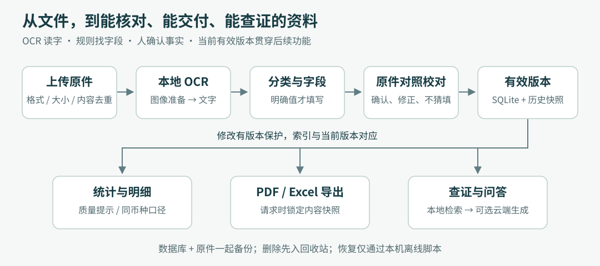

文档管理｜加工台
上传原件，识别文字，抽取字段，再对照原件校对。有效修改保留历史版本。
不需要先读完所有代码。沿着一份文档的旅程，就能理解整个项目。
把图片和 PDF，整理成能校对、能汇总、能交付、能查证的资料。
上传原件，识别文字，抽取字段，再对照原件校对。有效修改保留历史版本。
先看分类、日期和币种是否可靠，再展示适用图表。点击汇总能追到同口径明细。
关键词和向量一起查证据。可选云端模型依据片段组织回答，引用能回查，缺资料不硬编。
管理员处理回收站与完整备份。恢复只在本机离线执行，不开放网页恢复数据库。

首次学习不必修改正式数据。编辑、重识别和删除彩排使用隔离副本；基线数量会随实际操作变化。
查看逐步练习说明我们的项目叫智能文档工作台。它解决的是：图片、PDF 虽然保存下来了，但信息仍要逐份查找、手工录入，难以复用。
流程是上传原件、本地 OCR 读字、规则抽取字段，再由人对照校对。校对结果形成有效版本，接着用于统计、PDF/Excel 导出和带引用的检索问答。
前端使用 Vue，后端使用 FastAPI，数据库使用 SQLite。OCR 用已发布模型做本地 ONNX 推理；问答用关键词与向量找证据，云端模型只负责可选的回答组织。
我们重视可信：不知道的业务日期不猜填；未标币种按业务约定默认人民币，并说明这是默认值；统计不混算；多人编辑有版本冲突；删除有回收站，数据有备份。它是能把资料处理完、交出去、再查回来的工作台。
模型是现成的。工作在于把校验、处理、抽取、版本、统计口径、导出快照、索引和权限串成可靠流程；不要回避来源或宣称从零训练。
读出字不代表确认了事实。只标“日期”不能猜成开票日期，没有依据的业务日期留空。发票和合同未明确标币种时按业务约定默认人民币，这是业务假设而不是原件明示；明确标注的外币保留原币种，多币种冲突不强行默认。校对意味着审核过，不意味着强行填满。
安装好依赖和模型后，本地 OCR、校对、统计、导出、检索可用。云端生成需要网络，会发送相关片段和上下文，不能称为无外传风险。
DOC_OCR_DATA_DIR 指向同时含 data/、uploads/ 的目录，启停与恢复读取同一配置。